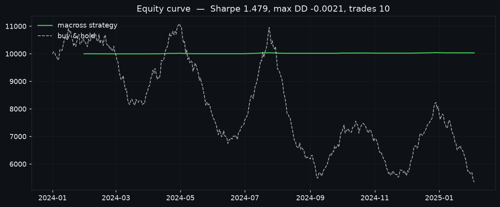
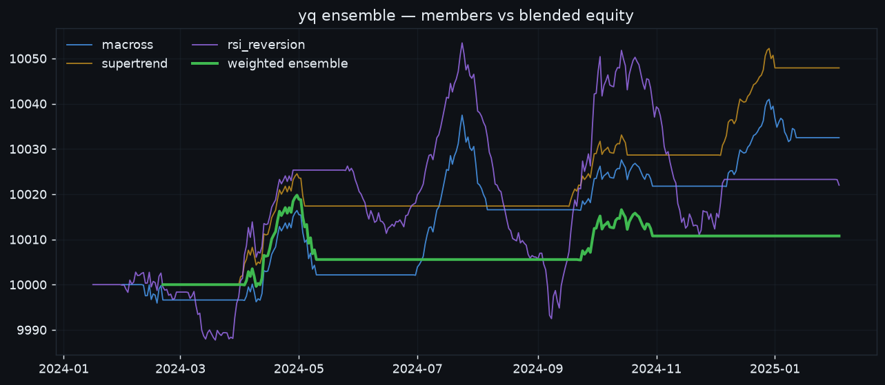

Tutorial — from zero to a running cockpit¶
A hands-on walkthrough of the whole loop: collect → research → backtest →
ensemble → signal → risk → trade → automate. Every step is a real yq command.
You are the operator
There's no paid LLM in the loop — you (Claude Code) drive these commands. Paper trading is the default, so you can run this entire tutorial with zero real-money risk.
0. Orient yourself¶
Each session starts by reloading memory and checking health:
yq recall # unread instructions + salient past notes + open positions
yq doctor # data freshness / config / account health
yq status # full cockpit snapshot (JSON)
If you opened the repo in Claude Code on the web, the SessionStart hook already installed everything and greeted you with this.
1. Collect candles¶
Backfill OHLCV into the local DuckDB store. The first positional args after the symbol are intervals.
Check what venues are available with yq exchanges, and configure keys once with
yq config set binance api_key=… secret=… (see Exchanges).
2. Research a symbol¶
yq features BTCUSDT 1d # returns, vol, RSI, MACD hist, ADX, CCI, ...
yq news --collect # pull RSS headlines, tag watchlist, score sentiment
yq brief BTCUSDT # one-screen digest: price + features + news + position
The 30+ indicators behind these features are all callable via candle.ind.<name>:

yq brief is the command to read before you decide — it folds price action,
the latest features, recent news sentiment, fundamentals (for stocks), and your
current position into a single JSON blob.
3. Backtest a strategy¶
The crossover entries/exits and the resulting equity curve (vs buy-and-hold):


There are 19 strategies across trend, breakout, and mean-reversion/scalping —
see Strategies & risk. Swap macross for any of them, e.g.
supertrend, stochastic_scalp, bollinger_reversion.
4. Optimize parameters¶
Grid-search the parameter space, then validate out-of-sample with walk-forward:
yq optimize BTCUSDT 1d macross --metric sharpe # grid search
yq optimize BTCUSDT 1d macross --walk-forward 4 # 4-fold out-of-sample
Beware overfitting
A great in-sample grid score means little. Always confirm with
--walk-forward, and record a baseline (step 9) so yq decay can warn you
when live performance erodes.
5. Ensemble several strategies¶
Blending diversifies away any single strategy's blind spots. Backtest an explicit blend:

The rule decides how member votes combine:
| Rule | Fires when |
|---|---|
any |
any member signals (permissive default for decide). |
weighted |
net weighted vote ≥ ±threshold. |
majority |
the leading side has ≥ threshold of voters. |
unanimous |
all voters agree. |
Weight members differently with --weights 2,1,1. The same engine powers
multi-strategy yq decide (step 7) — configure it once with:
6. Build a watchlist¶
The watchlist is the universe that cycles and decide operate over:
7. Signals → orders with yq decide¶
decide aggregates every enabled strategy's signal per watchlist symbol into one
risk-sized order. Dry-run first, then execute:
yq decide --weight 0.1 # preview (dry-run): what it *would* do
yq decide --weight 0.1 --execute # submit as PAPER orders
--weight 0.1sizes each entry to 10% of equity.--type limitrests live orders untilyq syncsettles them.- The blend rule from step 5 (
ensemble_rule/ensemble_threshold) controls how conflicting strategy votes resolve.
8. Set risk guardrails¶
The account risk policy is enforced on every order — paper or live — and can reject a trade before it fills:
yq risk set max_open_positions=5 max_order_value=1000 daily_loss_limit=200
yq risk # show the current policy
You can also gate entries on news: yq risk set sentiment_gate=-0.5 skips BUYs
when recent sentiment for a symbol is strongly negative.
9. Track strategy decay¶
10. Trade — paper now, live with two gates¶
Live needs both gates
A live order executes only with the env flag YQ_ALLOW_LIVE=1 and explicit
approval (yq approve or the dashboard button). See Money safety.
11. Portfolio targets & rebalance¶
Instead of one-off trades, steer toward target weights:
yq target BTCUSDT=0.5 ETHUSDT=0.3 # 50% BTC, 30% ETH, rest cash
yq rebalance --execute # move holdings toward the targets
yq mark # mark positions to live prices
yq report # realized PnL, drawdown, per-symbol
12. Automate while you're away¶
One maintenance pass, or a forever loop:
yq cycle # refresh → scan → mark → notify (once)
yq schedule --interval 300 # run a cycle every 5 minutes
Set auto_trade=true to let cycles call decide --execute automatically (paper
unless trade_mode=live). Wire DISCORD_WEBHOOK_URL for notifications when a
live order needs approval or a cycle finds signals.
13. Remember for next time¶
You're ephemeral — leave yourself a trail:
yq journal "entered BTC on supertrend flip + weighted ensemble, conviction high" \
--tag thesis --importance 8
Next session, yq recall surfaces it (ranked by recency × importance ×
relevance). See Memory & persistence.
14. Watch it live¶
The cockpit shows price/equity charts, positions, the news feed, pending-trade approvals, and an inbox where the user leaves you instructions — see The dashboard for a panel-by-panel tour.
Where to next¶
- The toolbelt — every command, grouped.
- Strategies & risk — all 19 strategies + 30+ indicators.
- Information layer — news, disclosures, fundamentals.
- Python library — use the framework directly in code.